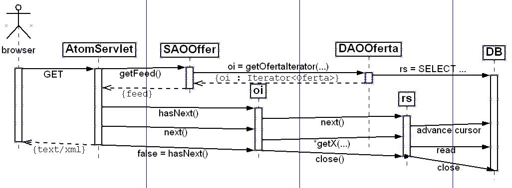

This package requires Java 5.
The classes in this package receive Atom http requests, parse and interpret the GData URL parameters, delegate the calls to some LAOs, and transform the results into XML. The central class is AtomServlet, which you should inherit from. The most important classes are:
The package atom.gdata implements the GData query language.
An Atom feed is an XML document. The most straightforward implementation would be to get the offers, transform them into entries, and build up an object model of the Atom feed. Then, transform the object model of the Atom feed into an object model of an XML document, and finally, serialise that to the response output stream. This is the DOM style of XML processing. Its main advantage is that it is easy to program. However, it requires that all of the data is in memory at the same time, possibly in multiple representations. We use a lot of memory.
An alternative is to use the SAX style of XML processing. We gather the data bit by bit, and serialise it to the output stream as we gather it. The whole data set needn't be in memory at the same time. This advantage is relevant for feeds with very many entries. We propose an easy SAX style, where the client programmer needn't use the SAX library at all. They must make methods that gather the data in a different way. Instead of returning lists, the must return objects that can return more data on demand, in Java, iterators. The iterator's hasNext() method calls the next() method on the underlying result set. The iterator's next() method calls the getX(..) methods of the underlying result set and returns one freshly instantiated business object. The last call to hasNext(), the one that returns false, also closes the underlying DB Connection. In the diagram, that is indicated by rs.close(); in fact it would be con.close(). In the diagram, there is only iterator. In fact, there may be several iterators, one delegated to another and applying some transformation of the returned data.
Finally, only within the serialising method of Feed, do we really use SAX. We first serialise the feed meta data, then the entries as they are produced from DB, and finally we close the <feed> tag.
The technique requires anonymous inner classes and care with the closing of the connection. I propose closing he connection on the last hasNext that returns false, in finalize(), and also in remove(), re-interpreting the methods remove() for when the client wants to signal that they are not going to iterator any more.